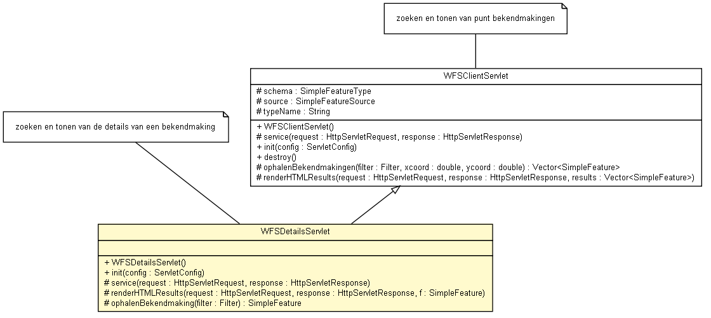

nl.geozet.wfs
Class WFSDetailsServlet

java.lang.Object
 javax.servlet.GenericServlet
javax.servlet.http.HttpServlet
nl.geozet.common.ServletBase
nl.geozet.wfs.WFSClientServlet
nl.geozet.wfs.WFSDetailsServlet
javax.servlet.GenericServlet
javax.servlet.http.HttpServlet
nl.geozet.common.ServletBase
nl.geozet.wfs.WFSClientServlet
nl.geozet.wfs.WFSDetailsServlet
- All Implemented Interfaces:
- Serializable, Servlet, ServletConfig
public class WFSDetailsServlet
- extends WFSClientServlet
Maakt de detail pagina voor een object uit de WFS.
- Since:
- 1.6, GeoTools 2.7, Servlet API 2.5
- Author:
- prinsmc@minlnv.nl
- See Also:
- Serialized Form
- Note:
- zoeken en tonen van de details van een bekendmaking
| Methods inherited from class java.lang.Object |
clone, equals, finalize, getClass, hashCode, notify, notifyAll, toString, wait, wait, wait |
WFSDetailsServlet
public WFSDetailsServlet()
init
public void init(ServletConfig config)
throws ServletException
- Description copied from class:
WFSClientServlet
- Initilaisatie op basis van de configuratie. init params inlezen en
controleren en init geotools
- Specified by:
init in interface Servlet- Overrides:
init in class WFSClientServlet
- Parameters:
config - the ServletConfig object that contains
configutation information for this servlet
- Throws:
ServletException - if an exception occurs that interrupts the servlet's normal
operation- See Also:
- "http://docs.codehaus.org/display/GEOTDOC/WFS+Plugin",
GenericServlet.init(javax.servlet.ServletConfig)
service
protected void service(HttpServletRequest request,
HttpServletResponse response)
throws ServletException,
IOException
- Description copied from class:
WFSClientServlet
- (non-Javadoc).
- Overrides:
service in class WFSClientServlet
- Parameters:
request - servlet requestresponse - servlet response
- Throws:
ServletException - the servlet exception
IOException - Signals that an I/O exception has occurred.- See Also:
HttpServlet.service(javax.servlet.http.HttpServletRequest,javax.servlet.http.HttpServletResponse)
renderHTMLResults
protected void renderHTMLResults(HttpServletRequest request,
HttpServletResponse response,
org.opengis.feature.simple.SimpleFeature f)
throws IOException,
ServletException
- Verzorgt de output voor deze servlet in HTML formaat.
- Parameters:
request - de servlet requestresponse - de servlet responsef - de (simple) feature waarvan de details worden gerenderd
- Throws:
IOException - Signals that an I/O exception has occurred.
ServletException - de servlet exception- See Also:
WFSClientServlet.renderHTMLResults(javax.servlet.http.HttpServletRequest,javax.servlet.http.HttpServletResponse,java.util.Vector)
ophalenBekendmaking
protected org.opengis.feature.simple.SimpleFeature ophalenBekendmaking(org.opengis.filter.Filter filter)
throws ServletException,
IOException
- Ophalen van een bekendmaking op baisis van de feature ID.
- Parameters:
filter - het filter
- Returns:
- de simple feature die is opgehaald bij de WFS
- Throws:
ServletException - servlet exception wordt geworpen als er een fout optreed
tijdens het ophalen, deze kan een geneste fout bevatten
IOException - Signals that an I/O exception has occurred.
Copyright © 2010 team GEOZET. All Rights Reserved.